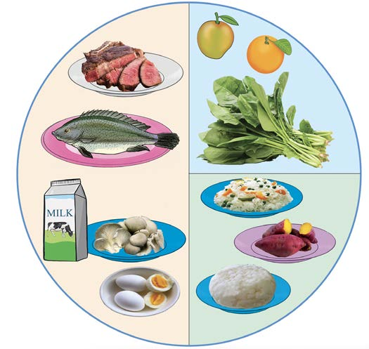

Balanced diet for different groups of people
Nutritional needs are different for each group of people. These groups are based on age, like children, adolescents and the elderly. Also, it depend on work people do, like manual workers, and health status, like the sick.
Children
Children need foods rich in protein because they are growing. These foods include milk, meat, fish, beans, peas, lentils and eggs. These foods help build the body, strengthen the immune system and support brain development. Children also need energy-giving foods to provide strength needed for doing activities like playing. Protective foods are needed to make their immune system strong. Figure 6 shows/describes a balanced diet for a child.
Body-building foods

Protective foods
Energy-giving foods
Figure 6: Balanced diet for a child